Topic 6 — Array Reshaping & Dimensions
Master array restructuring and multi-dimensional geometry in NumPy! Seekheiye ndim, shape,
aur size ke beech ka core difference, 1D array ko 2D matrices me transform karna, rows aur columns ka structure,
row vectors (1, n) aur column vectors (n, 1) ka distinction, -1 se automatic dimension inference,
3D tensor layers, total elements compatibility rules, reshape() vs flatten() vs ravel(),
reshape vs transpose (.T), memory sharing aur view vs copy mechanics, aur build kijiye complete
Student Performance Matrix Explorer!
Goals Learning Objectives
Is comprehensive, hands-on lesson ko complete karne ke baad aap in sabhi technical concepts par solid practical command hasil kar lenge:
- Array Dimensions ka Matlab: Samajhna ki dimension ka matlab array ke andar independent directions ya axes (Axis 0, Axis 1, Axis 2) hota hai.
ndimvsshapevssize: Number of axes (ndim), elements along each axis (shape), aur total item count (size) ka absolute clarity.- Reshaping ka Concept: Array ke underlying values ko bina badle ya delete kiye unke geometric layout ko transform karna.
reshape()Method: NumPy ke core syntaxarray.reshape(new_shape)ko effectively use karna.- 1D to 2D Transformation: Ek single sequential array ko tabular rows aur columns me re-organize karna.
- Rows and Columns Structure: 2D matrix shape tuple
(rows, columns)ka geometric layout aur index mapping samajhna. - Matrix Creation from Sequences:
np.arange()se continuous data generate karke structured matrices create karna. - 1D to 3D Tensor Reshaping: 1D sequences ko stacked 2D layers ya image batches
(depth, rows, cols)me package karna. - Automatic Dimension Inference (
-1): NumPy ko ek dimension calculate karne ke liye-1allow karna aur multiple-1ke restrictions samajhna. - Shape Compatibility Rule: Samajhna ki
original.size == np.prod(new_shape)hona mandatory hai. - Handling Incompatible Reshape Errors:
ValueError: cannot reshape array of size X into shape Yko debug aur fix karna. - Real-Life Datasets: Student marksheets, weekly store revenues, aur grayscale image batches par reshaping apply karna.
- Reshaping vs Transposing: Row-major element re-wrapping aur axis swapping (
matrix.T) ka fundamental fark. - Reshaping vs Flattening:
reshape(),flatten()(hamesha copy), aurravel()(possible view) ka memory behavior. - Memory Sharing (Views vs Copies):
np.shares_memory()se test karna ki kab reshaped array original RAM buffer share karta hai aur kab.copy()lagana safe hota hai. - Industry Relevance: Machine Learning batches, Computer Vision image tensors, aur Tabular Data Science me reshaping ki critical applications.
01 Opening Hook — Same Data, Different Structure
Imagine kijiye ek departmental store ka inventory manager 12 alag-alag grocery products ki ek single list maintain karta hai:
products = [1, 2, 3, 4, 5, 6, 7, 8, 9, 10, 11, 12]Store owner alag-alag analysis aur display ke liye isi same inventory data ko different layouts me dekhna chahta hai:
- Single Checkout Queue: Ek single row jisme sabhi 12 products sequentially line me hain → Shape
(12,). - Store Aisle Display (3 Shelves × 4 Items): 3 horizontal shelves, jisme har shelf par 4 items rakhe hain → Shape
(3, 4). - Vending Machine Rack (4 Slots × 3 Items): 4 vertical columns, jisme har column me 3 items stacked hain → Shape
(4, 3). - Multi-Branch Warehouse (2 Warehouses × 2 Rooms × 3 Racks): Multiple groups ka structured 3D volume → Shape
(2, 2, 3).
Reshaping array ke data values ko alter ya delete nahi karta; ye sirf un values ke organizational structure (geometry) ko change karta hai. Total number of items hamesha identical rahta hai:
12 values → Shape (12,) → Shape (3, 4) → Shape (4, 3) → Shape (2, 2, 3)
Aaiye dekhte hain ki ye same 12 values mathematically aur visually kis tarah arrange hoti hain:
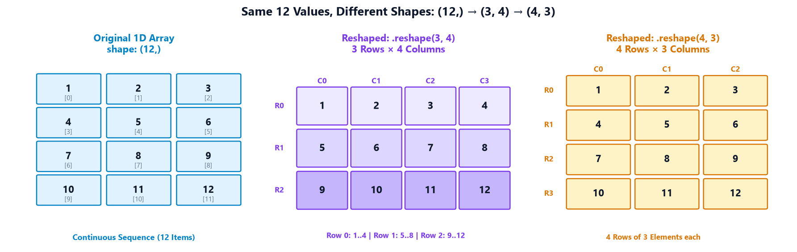
02 Section A — Understanding Array Dimensions
NumPy me kisi bhi data structure ko samajhne ke liye 3 fundamental properties ko master karna mandatory hai:
ndim(Number of Dimensions / Axes): Array ke andar kitne independent axes hain. 1D array me 1 axis hota hai, 2D me 2 axes (rows & cols), 3D me 3 axes (depth, rows, cols).shape(Tuple of Dimension Sizes): Har axis ke along kitne elements maujood hain. For example,(3, 4)ka matlab hai 3 rows aur 4 columns.size(Total Elements): Array ke andar store kiye gaye total scalar values ka count. Ye hameshashapeke sabhi numbers ka product hota hai.
Ek 1D array ki shape Python me
(n,) likhi jaati hai, (1, n) nahi!
(n,) ka matlab single-axis 1D vector hai (ndim = 1), jabki (1, n) ek 2D matrix hota hai jisme 1 row aur n columns hote hain (ndim = 2).
Example 1 — A 1D Array (Daily Weather Temperatures)
Ek city ke 5 consecutive days ke temperature readings ko 1D array me store karte hain:
import numpy as np
# 1D Array of weekly temperature readings in Celsius
temperatures = np.array([24, 26, 28, 30, 29])
print("Temperatures array:", temperatures)
print("Dimensions (ndim):", temperatures.ndim)
print("Shape tuple:", temperatures.shape)
print("Total elements (size):", temperatures.size)
Line-by-Line Explanation:
• temperatures.ndim returns 1 kyunki data sirf ek single axis (Axis 0) ke along traverse hota hai.
• temperatures.shape returns (5,) jiska matlab Axis 0 par exactly 5 values hain.
• temperatures.size returns 5 items.
Example 2 — A 2D Array (Student Exam Marks Table)
3 students ke 3 subjects ke exam marks ko 2D matrix me represent karte hain:
import numpy as np
# 2D Array: 3 Students (Rows) x 3 Subjects (Columns)
marks = np.array([
[78, 85, 90], # Student 0
[88, 76, 82], # Student 1
[92, 89, 95] # Student 2
])
print("Marks Matrix:\n", marks)
print("Dimensions (ndim):", marks.ndim)
print("Shape tuple:", marks.shape)
print("Total elements (size):", marks.size)
Line-by-Line Explanation:
• marks.ndim returns 2 kyunki matrix me 2 orthogonal axes hain (Axis 0 = Rows, Axis 1 = Columns).
• marks.shape returns (3, 3): exactly 3 rows aur 3 columns.
• marks.size returns 9 (3 × 3 = 9 total elements).
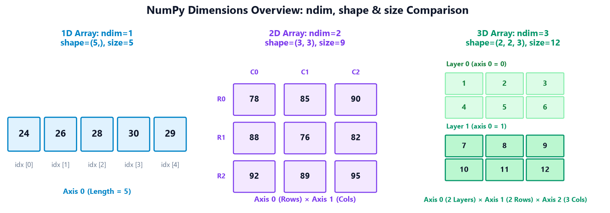
03 Section B — What is Reshaping?
Reshaping ka seedha matlab hai: array ke internal data ko bina chhede uski outer boundary aur axes ko reconfigure karna.
NumPy me reshaping ke liye standard method use hota hai:
reshaped_array = array.reshape(new_shape)
Default Memory Packing Order (C-Style Row-Major):
NumPy by default elements ko row-major (C-style) order me read aur fill karta hai. Yani pehle row 0 ke sabhi columns bhare jaate hain,
fir row 1 ke sabhi columns, fir row 2, aur isi tarah aage. Elements ka original sequence change nahi hota.
Example 1 — Convert 1D into 2D
6 sequential numbers ko 2 rows aur 3 columns ke matrix me reshape karte hain:
import numpy as np
numbers = np.array([1, 2, 3, 4, 5, 6])
matrix = numbers.reshape(2, 3)
print("Original 1D array:", numbers)
print("Reshaped (2, 3) matrix:\n", matrix)
print("Shape:", matrix.shape)
print("Dimensions:", matrix.ndim)
Line-by-Line Explanation:
• numbers ek 1D array tha shape (6,) ke sath.
• numbers.reshape(2, 3) ne pehle 3 elements [1, 2, 3] ko Row 0 banaya, aur next 3 elements [4, 5, 6] ko Row 1 banaya.
• Total items 2 × 3 = 6 rahe, koi element add ya drop nahi hua.
Example 2 — Convert into a Different Matrix Layout
8 elements ko 4 rows aur 2 columns ke taller matrix me reshape karte hain:
import numpy as np
numbers = np.array([10, 20, 30, 40, 50, 60, 70, 80])
matrix = numbers.reshape(4, 2)
print("Reshaped (4, 2) matrix:\n", matrix)
print("Shape:", matrix.shape)
Line-by-Line Explanation:
• Yahan 8 values ko 4 rows me divide kiya gaya, jisme har row me exactly 2 columns aaye.
• Elements sequential pairs me arrange hue: [10, 20], [30, 40], [50, 60], aur [70, 80].
04 Section C — Understanding Rows and Columns
Jab hum 2D array me reshape(rows, cols) pass karte hain, toh pehla number vertical height (number of rows)
aur doosra number horizontal width (number of columns) define karta hai.
NumPy array ke liye rows aur columns sirf numerical indices hote hain (Axis 0 aur Axis 1). Unka real-world meaning — jaise "Rows = Students" aur "Columns = Subjects" — aapke dataset aur problem domain se aata hai,
reshape() method se nahi!
Example 1 — Student Marks Table (3 Students × 3 Subjects)
9 sequential marks ko 3 students aur 3 subjects ki gradebook table me transform karte hain:
import numpy as np
# 9 exam scores of 3 students across Maths, Physics, Chemistry
marks = np.array([78, 85, 90, 88, 76, 82, 92, 89, 95])
table = marks.reshape(3, 3)
print("Student Gradebook Matrix (3x3):\n", table)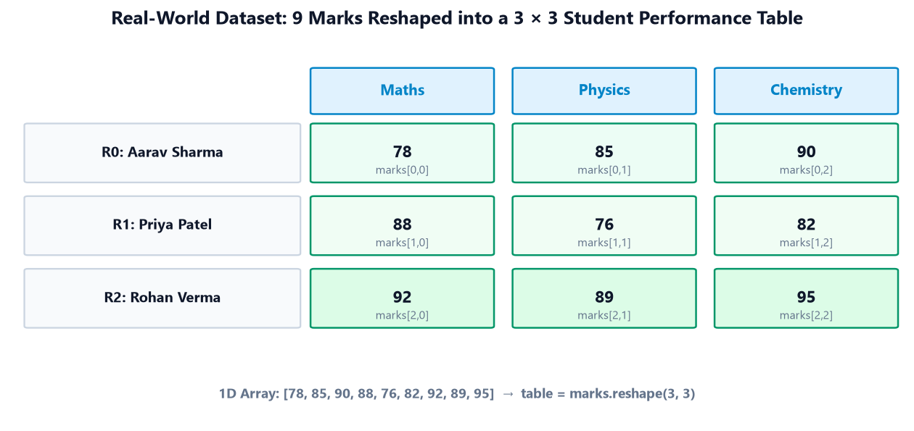
Example 2 — Weekly Retail Sales Matrix (3 Weeks × 4 Days)
12 daily sales records ko 3 weeks ke 4 working days (Mon, Tue, Wed, Thu) ke matrix me convert karte hain:
import numpy as np
# 12 daily sales figures (in thousands ₹)
sales = np.array([
120, 150, 180, 200, # Week 1
100, 130, 170, 190, # Week 2
140, 160, 210, 230 # Week 3
])
sales_matrix = sales.reshape(3, 4)
print("Weekly Sales Matrix (3x4):\n", sales_matrix)
print("Week 1 Total Revenue: ₹", sales_matrix[0].sum(), "k")
print("Thursday Sales Across All Weeks:", sales_matrix[:, 3])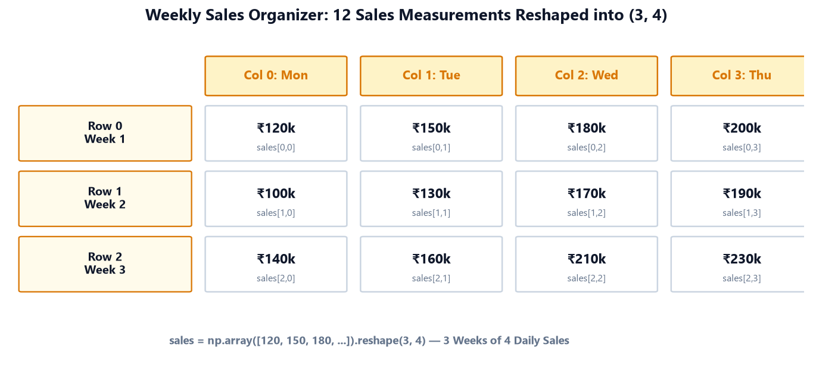
05 Section D — Reshaping into a Row or Column Vector
Machine Learning aur Linear Algebra me vectors ki orientation bahut critical hoti hai. Humein in 3 structures me clear difference pata hona chahiye:
| Array Type | Shape | Dimensions (ndim) |
Python Brackets Display | Common ML / Math Usage |
|---|---|---|---|---|
| 1D Array | (n,) |
1 | [10, 20, 30, 40] |
Simple series, target labels y. |
| Row Vector (2D) | (1, n) |
2 | [[10, 20, 30, 40]] |
Single sample with n features. |
| Column Vector (2D) | (n, 1) |
2 | [[10], [20], [30], [40]] |
Feature matrix X in Scikit-Learn. |
Example 1 — Create a Row Vector (1, 4)
4 values ko ek horizontal 2D row vector me reshape karte hain:
import numpy as np
data = np.array([10, 20, 30, 40])
row_vector = data.reshape(1, 4)
print("Row Vector:\n", row_vector)
print("Shape:", row_vector.shape)
print("Dimensions (ndim):", row_vector.ndim)Example 2 — Create a Column Vector (4, 1)
Isi 4-element data ko ek vertical 2D column vector me reshape karte hain:
import numpy as np
data = np.array([10, 20, 30, 40])
column_vector = data.reshape(4, 1)
print("Column Vector:\n", column_vector)
print("Shape:", column_vector.shape)
print("Dimensions (ndim):", column_vector.ndim)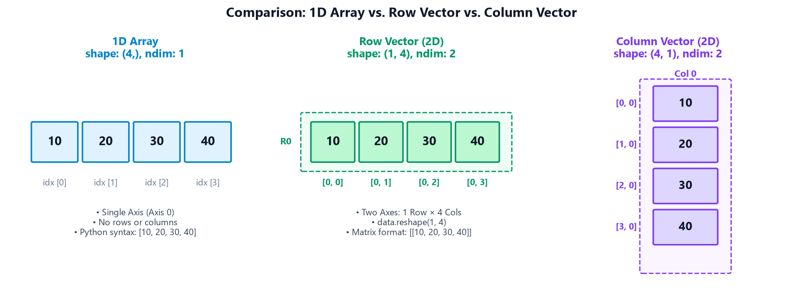
06 Section E — Using -1 for Automatic Dimension Inference
Bade real-world datasets me har baar manual calculation karna cumbersome hota hai. NumPy ek powerful shortcut provide karta hai:
-1 passing.
Jab aap kisi dimension ki jagah -1 pass karte hain, toh NumPy bolta hai:
"Aap baaki dimensions batao, is ek dimension ko main total size se automatically calculate kar loonga!"
Inferred Dimension = Total Elements / Product of Known Dimensions
Important Rule: Ek single reshape operation me aap sirf ek hi dimension ke liye
-1 use kar sakte hain!
Example 1 — Automatically Calculate Row Count (-1, 3)
12 elements hain aur humein exactly 3 columns chahiye. Rows ko automatic calculate karne dete hain:
import numpy as np
data = np.arange(1, 13) # 12 elements: [1, 2, ..., 12]
matrix = data.reshape(-1, 3)
print("Auto Rows (-1, 3):\n", matrix)
print("Resulting Shape:", matrix.shape)Calculation: Total elements = 12. Specified columns = 3. Inferred rows = 12 / 3 = 4 rows!
Example 2 — Automatically Calculate Column Count (3, -1)
Isi 12-element array me hum 3 rows chahte hain aur columns ko infer karne dete hain:
import numpy as np
data = np.arange(1, 13)
matrix = data.reshape(3, -1)
print("Auto Columns (3, -1):\n", matrix)
print("Resulting Shape:", matrix.shape)Calculation: Total elements = 12. Specified rows = 3. Inferred columns = 12 / 3 = 4 columns!
Negative Test — Passing Multiple -1 Arguments
Agar hum ek se zyada -1 pass karein toh kya hoga?
try:
data.reshape(-1, -1)
except ValueError as e:
print("Caught Runtime Error:", e)NumPy ambiguous math solve nahi kar sakta: 12 elements ko `(-1, -1)` me divide karne ke anant combinations ho sakte hain (1×12, 2×6, 3×4, 4×3, etc.), isliye multiple `-1` strictly disallowed hai.
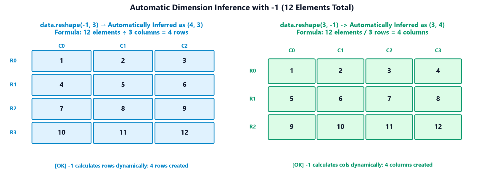
07 Section F — Reshaping into 3D Arrays
3D array ko visualize karne ke 2 everyday mental models hain:
- Stacked Tables: Ek notebook jisme har page par ek 2D marks table hai. Page number depth (Axis 0) hai, rows student hain (Axis 1), aur columns subjects hain (Axis 2).
- Computer Vision / Image Batch: Ek batch jisme multiple grayscale images store hain. Axis 0 = Image Index, Axis 1 = Height (Pixel Rows), Axis 2 = Width (Pixel Columns).
Shape format standard format: (depth, rows, columns). Lekin yaad rakhiye ki NumPy axes generic mathematical dimensions hote hain, unka koi fixed physical rule nahi hota.
Example 1 — Two Stacked Tables (2 × 2 × 3)
12 sequential elements ko 2 stacked matrices me reshape karte hain:
import numpy as np
data = np.arange(1, 13)
volume = data.reshape(2, 2, 3)
print("3D Array (2, 2, 3):\n", volume)
print("Shape:", volume.shape)
print("Dimensions (ndim):", volume.ndim)
Structure Breakdown:
• Layer 0: [[1, 2, 3], [4, 5, 6]] (2 rows × 3 columns)
• Layer 1: [[7, 8, 9], [10, 11, 12]] (2 rows × 3 columns)
• Total items: 2 × 2 × 3 = 12 items.
Example 2 — Small Grayscale Image Batch (2 Images × 3 Rows × 4 Cols)
24 pixel values ko 2 images ke batch me package karte hain:
import numpy as np
pixels = np.arange(24) # 24 pixel intensity values
images = pixels.reshape(2, 3, 4)
print("Batch of 2 Grayscale Images:\n", images)
print("Batch Shape:", images.shape)
print("First Image Only (images[0]):\n", images[0])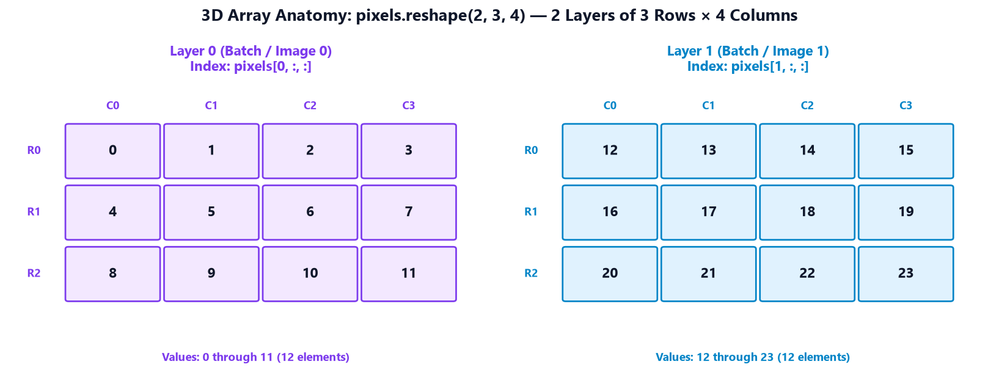
08 Section G — Shape Compatibility and Errors
Reshape operation tabhi valid hota hai jab requested shape ke slots ka product original array ke total size
ke exact equal ho:
original.size == np.prod(new_shape)For example: 6 elements ko
(2, 3), (3, 2), (1, 6), (6, 1) me reshape kiya ja sakta hai (kyunki sabhi ka product 6 hai).
Lekin (4, 2) me reshape nahi kiya ja sakta (kyunki 4 × 2 = 8 slots chahiye, jabki hamare paas sirf 6 elements hain!).
Example 1 — Valid Reshape (6 Elements into (2, 3))
import numpy as np
data = np.array([1, 2, 3, 4, 5, 6])
valid = data.reshape(2, 3)
print("Valid Reshape Successful:\n", valid)Example 2 — Invalid Reshape (6 Elements into (4, 2))
try:
invalid = data.reshape(4, 2)
except ValueError as e:
print("Actual Runtime Exception:", e)Debugging Best Practice: Jab bhi reshape error aaye, turant compare kijiye:
print("Current size:", data.size)
print("Requested size:", 4 * 2) # 8 != 6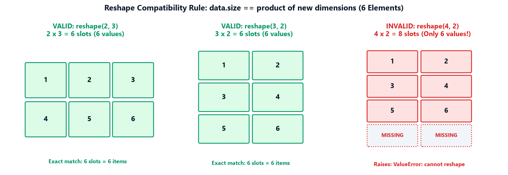
09 Section H — reshape() versus flatten() and ravel()
Kayi baar students multi-dimensional arrays ko 1D me convert karne ke liye confuse ho jaate hain. In teeno me clear technical differences hain:
| Method | Target Output Shape | Memory Allocation Behavior | Mutation Effect on Original Array |
|---|---|---|---|
arr.reshape(...) |
Any compatible dimensions (1D, 2D, 3D, etc.) | Returns a VIEW whenever possible. | Modifying view MUTATES original array! |
arr.flatten() |
Strictly 1D Array (n,) |
Always returns a fresh COPY in new RAM. | Safe! Modifying copy NEVER affects original. |
arr.ravel() |
Strictly 1D Array (n,) |
Returns a VIEW if memory is contiguous; copy otherwise. | Caution! Modifying view CAN MUTATE original array. |
Code Demonstration — Comparing Reshape, Flatten, and Ravel
import numpy as np
matrix = np.array([
[1, 2, 3],
[4, 5, 6]
])
# 1. Reshape into another 2D matrix
reshaped = matrix.reshape(3, 2)
# 2. Flatten into 1D (Deep copy)
flat = matrix.flatten()
# 3. Ravel into 1D (Contiguous view)
rav = matrix.ravel()
print("Reshaped (3, 2):\n", reshaped)
print("flatten() (1D Copy):", flat)
print("ravel() (1D View):", rav)
print("Original matrix shape:", matrix.shape)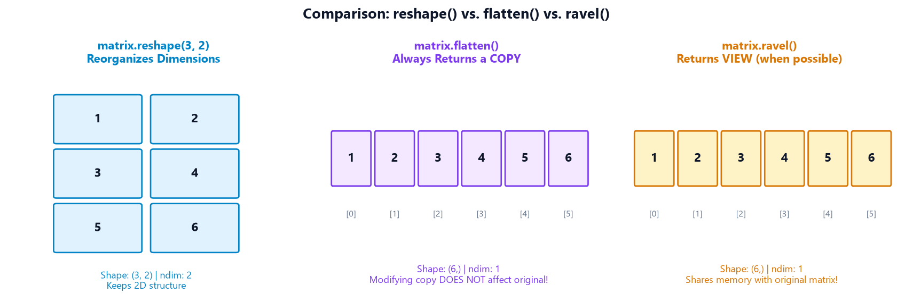
10 Section I — Reshaping versus Transposing
Ye NumPy ka sabse common interview question aur conceptual trap hai:
"Kya matrix.reshape(cols, rows) aur matrix.T same hote hain?"
• Reshaping (रीशेपिंग): Memory me elements ko unke raw reading order (row-major) me sequentially wrap karta hai.
• Transposing (ट्रांसपोजिंग): Array ke axes ko swap karta hai. 2D array me Row 0 pure Column 0 me convert ho jaati hai, Row 1 Column 1 ban jaati hai!
Code Verification — Direct Side-by-Side Comparison
import numpy as np
matrix = np.array([
[1, 2, 3],
[4, 5, 6]
])
# Reshape into (3, 2)
reshaped = matrix.reshape(3, 2)
# Transpose into (3, 2)
transposed = matrix.T
print("Original Matrix (2, 3):\n", matrix)
print("\nReshaped (3, 2):\n", reshaped)
print("\nTransposed (3, 2):\n", transposed)
print("\nAre values identical?", np.array_equal(reshaped, transposed))
Kyun Fark Aaya?
• Reshape ne continuous values [1, 2, 3, 4, 5, 6] ko 2-2 ke chunks me pack kiya: [1, 2], [3, 4], [5, 6].
• Transpose ne Original Row 0 [1, 2, 3] ko Column 0 banaya, aur Row 1 [4, 5, 6] ko Column 1 banaya!
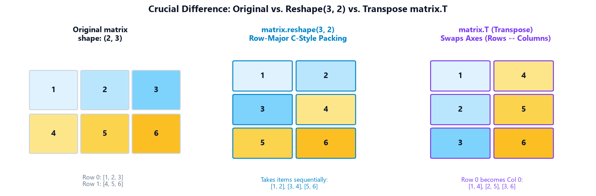
11 Section J — Does Reshape Modify the Original Array?
Ek aur crucial concept: Memory Sharing (Views vs Copies).
Jab aap arr.reshape(...) call karte hain, toh kya RAM me data ka naya copy banta hai?
The Technical Reality: Agar original array memory me contiguous (C-order continuous) hai, toh NumPy efficiency ke liye VIEW return karta hai. Iska matlab reshaped array aur original array RAM me same underlying buffer ko point karte hain.
np.shares_memory() use kijiye!
Example 1 — Check Memory Sharing with np.shares_memory
import numpy as np
original = np.arange(1, 7)
reshaped = original.reshape(2, 3)
print("Reshaped Array:\n", reshaped)
print("Do they share memory?", np.shares_memory(original, reshaped))Example 2 — Create an Independent Copy using .copy()
Agar aap reshaped array me modifications karna chahte hain bina original dataset ko corrupt kiye, toh .copy() lagaiye:
import numpy as np
original = np.arange(1, 7)
reshaped_copy = original.reshape(2, 3).copy()
# Modify only the copy
reshaped_copy[0, 0] = 999
print("Original Array (Unchanged):", original)
print("Independent Copy:\n", reshaped_copy)
print("Do they share memory?", np.shares_memory(original, reshaped_copy))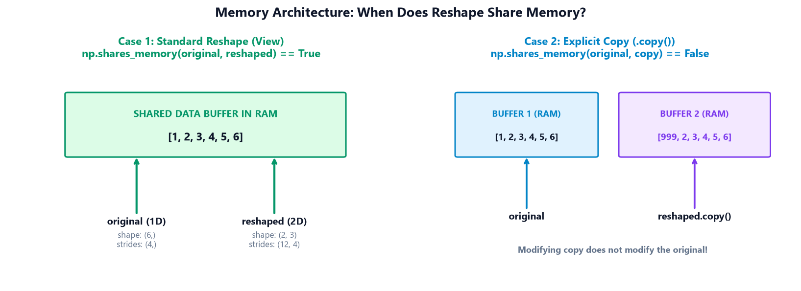
12 Reshaping in Real-World Data Science & Machine Learning
Industry-level data pipelines me array reshaping sabse frequently used operations me se ek hai:
- Machine Learning Feature Matrices: Scikit-Learn ke algorithms (Linear Regression, SVM, Decision Trees) input feature matrix
Xko hamesha 2D format(n_samples, n_features)me expect karte hain. Single feature ko fit karne ke liyex.reshape(-1, 1)lagana standard industry practice hai. - Deep Learning Image Batches: Neural networks (CNNs) image collections ko 4D tensors me process karte hain:
(batch_size, height, width, channels). For example, 10,000 MNIST digits ko(10000, 28, 28, 1)me reshape kiya jaata hai. - Time-Series & Sensor Windows: IoT sensors se continuous 1D hourly readings ko weekly analysis ke liye
(n_weeks, 7, 24)tensor me reshape kiya jaata hai. - Tabular Pivot Tables & Matrix Multiplication: High-performance linear algebra routines (BLAS/LAPACK) ke liye 1D arrays ko rectangular matrices me transform kiya jaata hai.
13 Common Mistakes & Debugging Guide
Beginners array reshaping aur dimensions ke sath ye 10 standard mistakes karte hain. Har issue ka cause, exact runtime error, aur fix samjhiye:
Incorrect Assumption: "NumPy missing values ko 0 se fill kar dega ya extra elements discard kar dega."
Buggy Code: np.arange(6).reshape(4, 2)
Exact Runtime Error: ValueError: cannot reshape array of size 6 into shape (4,2)
Corrected Code: np.arange(6).reshape(3, 2) ya np.arange(8).reshape(4, 2)
Explanation: Reshape kabhi bhi data drop ya pad nahi karta. Dimensions ka product strictly arr.size ke barabar hona chahiye.
Incorrect Assumption: "Shape, size, aur ndim sab same cheez represent karte hain."
Buggy Code: if arr.size == 2: # Trying to check if array is 2D
Explanation: size total items batata hai, ndim number of axes batata hai, aur shape un axes ki length tuple batata hai. 2D check karne ke liye arr.ndim == 2 likhiye!
Incorrect Assumption: "1D array aur 1-row 2D matrix mathematically aur functionally identical hain."
Buggy Code: Passing arr.shape == (5,) into an ML model expecting (1, 5)
Explanation: (5,) has 1 axis. (1, 5) has 2 axes. Inhe index karne ke rules aur broadcasting behavior alag hote hain.
Incorrect Assumption: "Row vector (1, 4) aur column vector (4, 1) same matrix multiplication result denge."
Buggy Code: Performing dot product without matching inner dimensions.
Explanation: Row vector horizontal hota hai aur column vector vertical. Inke matrix dimensions (1, 4) aur (4, 1) Linear Algebra me non-interchangeable hote hain.
Incorrect Assumption: "Hum rows aur columns dono ko -1 dekar automatic inference kar sakte hain."
Buggy Code: arr.reshape(-1, -1)
Exact Runtime Error: ValueError: can only specify one unknown dimension
Corrected Code: arr.reshape(-1, 3) ya arr.reshape(4, -1)
Explanation: Ek equation me do unknowns hone par infinite solutions bante hain, isliye NumPy sirf ek hi -1 allow karta hai.
Incorrect Assumption: "Reshape karne se array chhota ya bada ho jaata hai."
Explanation: Reshape sirf arrangement badalta hai. Data buffer ke elements exact preserve rahte hain.
Incorrect Assumption: "matrix.reshape(3, 2) wahi karega jo matrix.T karta hai."
Explanation: Reshape memory reading order me wrap karta hai, jabki Transpose rows aur columns ko physically swap karta hai.
Incorrect Assumption: "flatten() aur ravel() me koi fark nahi hai."
Explanation: flatten() hamesha ek independent COPY banata hai. ravel() jab possible ho toh VIEW banata hai jo original array ke data ko mutate kar sakta hai!
Incorrect Assumption: "Reshape karne ke baad naya variable modify karne se original data safe rahega."
Buggy Code: b = a.reshape(2, 3); b[0, 0] = 999 # a[0] also became 999!
Corrected Code: b = a.reshape(2, 3).copy()
Explanation: Contiguous arrays par reshape() view return karta hai jo memory share karta hai.
Incorrect Assumption: "3D array ka matlab hamesha koi 3D cube ya physical 3D game object hota hai."
Explanation: 3D array sirf 3 numerical axes ka data structure hai. Ye stacked tables, image collections, ya time-series windows ho sakta hai.
14 Practical Mini-Project — Student Performance Matrix Explorer
Aaiye ek complete, real-world Python utility develop karte hain: Student Performance Matrix Explorer! Is project me hum 4 students ke 3 subjects ke exam scores ko sequential data se tabular matrix me transform karenge, metadata audit karenge, row aur column vectors generate karenge, safe error handling ke sath invalid shapes test karenge, automatic dimension inference apply karenge, aur reshape vs transpose ka heatmap generate karenge.
import numpy as np
# 1. Dataset Setup: 4 Students x 3 Subjects (12 scores total)
students = ["Aarav", "Priya", "Rohan", "Ananya"]
subjects = ["Maths", "Physics", "Chemistry"]
# Raw continuous sequential scores from student database stream
raw_scores = np.array([85, 92, 78, 88, 76, 95, 90, 84, 89, 94, 91, 86])
print("==================================================")
print("STUDENT PERFORMANCE MATRIX EXPLORER AUDIT")
print("==================================================")
# A. Inspect Raw 1D Stream
print("\n1. Raw Data Stream:", raw_scores)
print(f" Shape: {raw_scores.shape} | ndim: {raw_scores.ndim} | size: {raw_scores.size}")
# B. Reshape into 2D Academic Matrix (4 Students x 3 Subjects)
performance_matrix = raw_scores.reshape(4, 3)
print("\n2. Structured Performance Matrix (4x3):\n", performance_matrix)
print(f" Matrix Shape: {performance_matrix.shape} | ndim: {performance_matrix.ndim} | size: {performance_matrix.size}")
# C. Row Vector & Column Vector Extraction
first_student_row = performance_matrix[0].reshape(1, 3)
print(f"\n3. Aarav's Marks as 2D Row Vector (1, 3):\n{first_student_row} (shape: {first_student_row.shape})")
maths_col_vector = performance_matrix[:, 0].reshape(4, 1)
print(f" Maths Scores as 2D Column Vector (4, 1):
{maths_col_vector} (shape: {maths_col_vector.shape})")
# D. Shape Compatibility & Controlled Error Handling
print("\n4. Controlled Shape Compatibility Check:")
try:
invalid_test = raw_scores.reshape(5, 3) # Requires 15, only 12 available
except ValueError as err:
print(f" [Handled Exception] {err}")
# E. Automatic Dimension Inference (-1)
auto_matrix = raw_scores.reshape(4, -1)
print(f"\n5. Inferred Shape with (4, -1): {auto_matrix.shape} (Columns inferred as 3)")
# F. Reshape vs Transpose Analysis
transposed_matrix = performance_matrix.T
print("\n6. Transposed Matrix (3 Subjects x 4 Students):\n", transposed_matrix)
print(f" Transposed Shape: {transposed_matrix.shape}")
print(f" Shares Memory with Original: {np.shares_memory(performance_matrix, transposed_matrix)}")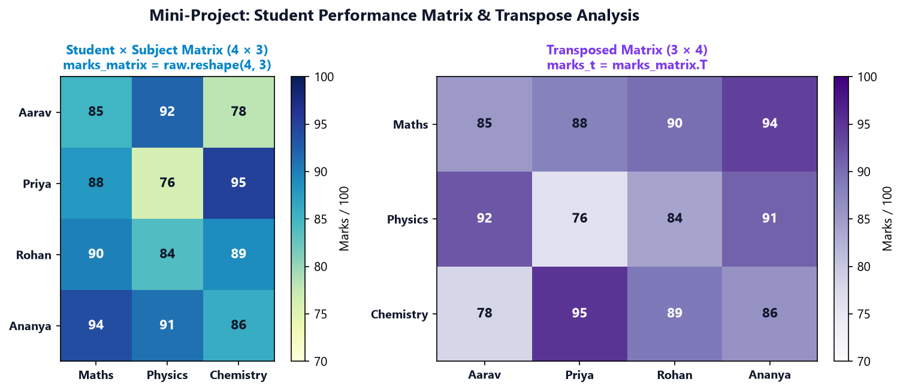
1. Subject Topper Finder: Har subject (column) par
np.argmax(performance_matrix[:, col]) ka use karke highest scorer student ka naam print kijiye.2. 3D Term-Wise Tracker: Ek doosra semester add karke 24 scores generate kijiye aur data ko
(2, 4, 3) tensor me reshape karke term-over-term progress calculate kijiye.
15 Practice, Revision & Knowledge Challenges
Part A: Predict the Output (10 Questions)
Q1: arr = np.arange(6); print(arr.ndim, arr.shape, arr.size)
1 (6,) 6Reasoning:
np.arange(6) 1D array banata hai jisme 1 axis hoti hai, shape (6,) hoti hai, aur total elements 6 hote hain.
Q2: arr = np.arange(1, 7); print(arr.reshape(2, 3))
[[1 2 3]
[4 5 6]]Reasoning: Row-major order me pehle 3 elements Row 0 me aate hain aur baaki 3 Row 1 me.
Q3: data = np.array([5, 10, 15]); print(data.reshape(1, -1).shape)
(1, 3)Reasoning: 3 elements ko 1 row me divide karne par columns automatically 3 infer hote hain.
Q4: data = np.array([5, 10, 15]); print(data.reshape(-1, 1).shape)
(3, 1)Reasoning: 3 elements ko 1 column me divide karne par rows automatically 3 infer hoti hain (2D column vector).
Q5: arr = np.arange(12); print(arr.reshape(2, 2, 3).shape)
(2, 2, 3)Reasoning: 2 × 2 × 3 = 12 elements compatible hain, isliye 3D array banta hai jisme 2 layers, 2 rows, aur 3 columns hote hain.
Q6: arr = np.arange(10); arr.reshape(3, 3)
ValueError: cannot reshape array of size 10 into shape (3,3)Reasoning: 3 × 3 = 9 slots chahiye, jabki array me 10 elements hain. Product match na hone se ValueError raise hota hai.
Q7: m = np.array([[1, 2], [3, 4]]); f = m.flatten(); f[0] = 99; print(m[0, 0])
1Reasoning:
flatten() hamesha ek independent copy return karta hai. Copy ko change karne se original matrix mutate nahi hota.
Q8: m = np.array([[1, 2], [3, 4]]); r = m.ravel(); r[0] = 99; print(m[0, 0])
99Reasoning:
ravel() contiguous array par memory VIEW return karta hai, isliye r[0] mutate hone par m[0, 0] bhi 99 ban gaya!
Q9: m = np.array([[1, 2, 3], [4, 5, 6]]); print(m.T[0, 1])
4Reasoning: Transpose me original Row 1 Column 1 ban jaati hai. Toh
m.T[0, 1] original m[1, 0] (jo 4 hai) ko point karta hai.
Q10: a = np.arange(4); b = a.reshape(2, 2); print(np.shares_memory(a, b))
TrueReasoning: Contiguous 1D array ko 2D me reshape karne par NumPy shared RAM memory view create karta hai.
Part B: Write the Code (8 Exercises)
Exercise 1: 12 sequential numbers ko 3 × 4 matrix me reshape kijiye.
import numpy as np
matrix = np.arange(1, 13).reshape(3, 4)Exercise 2: 8 values se ek 2D column vector banaiye.
col_vector = np.arange(8).reshape(8, 1)
# Alternately: np.arange(8).reshape(-1, 1)Exercise 3: -1 ka use karke 15 values ko 5 columns wale matrix me auto-infer kijiye.
matrix = np.arange(15).reshape(-1, 5) # Inferred as (3, 5)Exercise 4: 24 numbers ko 2 layers, 3 rows, aur 4 columns ke 3D tensor me package kijiye.
tensor3d = np.arange(24).reshape(2, 3, 4)Exercise 5: 6 student marks ko 3 students x 2 subjects ke matrix me organize kijiye.
marks_matrix = np.array([75, 80, 85, 90, 65, 70]).reshape(3, 2)Exercise 6: 8 daily sales values ko 2 weeks x 4 days ke matrix me transform kijiye.
sales_matrix = np.array([100, 110, 120, 130, 140, 150, 160, 170]).reshape(2, 4)Exercise 7: Kisi 2D matrix ka reshape aur transpose compare karke prove kijiye ki wo different hain.
base = np.array([[10, 20], [30, 40], [50, 60]])
r = base.reshape(2, 3)
t = base.T
print("Identical?", np.array_equal(r, t)) # FalseExercise 8: 2D matrix ko safely flatten kijiye taaki original data kabhi affect na ho.
safe_flat = matrix.flatten() # Always a copy!Part C: Debugging Challenges (6 Questions)
Debug 1: ValueError: cannot reshape array of size 14 into shape (3, 5)
np.arange(14).reshape(3, 5)Reason: 3 × 5 = 15 slots required, lekin array size 14 hai (1 element short).
Fix: Array size 15 kijiye:
np.arange(15).reshape(3, 5) ya shape badaliye.
Debug 2: ValueError: can only specify one unknown dimension
data.reshape(-1, -1)Reason: Ek sath do unknown dimensions infer nahi ki jaa sakti.
Fix: Kam se kam ek known dimension specify kijiye:
data.reshape(-1, 4).
Debug 3: Unexpected Mutation of Original Dataset
grid = data.reshape(2, 3); grid[0, 0] = 0Reason:
grid ek VIEW tha, isliye original data ka pehla element bhi modify ho gaya.Fix: Explicit copy banaiye:
grid = data.reshape(2, 3).copy().
Debug 4: Scikit-Learn Model Error: Expected 2D array, got 1D array instead
model.fit(features_1d, labels) where features_1d.shape == (100,)Reason: ML algorithms 2D feature matrix expect karte hain.
Fix: Column vector me reshape kijiye:
features_1d.reshape(-1, 1).
Debug 5: Transpose Expected but Values Got Re-Wrapped
table.reshape(3, 2) on a (2, 3) array.Reason:
reshape axes swap nahi karta, sirf row-major reading order me elements fill karta hai.Fix: Use transpose attribute:
table.T.
Debug 6: Negative Reshape Dimension Incompatible
np.arange(10).reshape(-1, 3)Reason: 10 elements 3 se evenly divisible nahi hote (10 % 3 != 0).
Fix: Divisible count lijiye:
np.arange(12).reshape(-1, 3) ya np.arange(10).reshape(-1, 2).
Part D: Conceptual MCQs (8 Questions)
MCQ 1: NumPy array me ndim attribute kya return karta hai?
B) Number of axes (dimensions)
C) Memory size in bytes
D) Data type code
Correct Answer: B) Number of axes (dimensions)
Explanation:
ndim array ke independent axes ka count batata hai (jaise 1D ke liye 1, 2D ke liye 2).
MCQ 2: Ek 1D array jisme 6 elements hain, uski shape tuple kaise likhi jaati hai?
B) (6, 1)
C) (6,)
D) [6]
Correct Answer: C) (6,)
Explanation: 1D array ki shape me trailing comma ke sath single number
(n,) aata hai.
MCQ 3: Agar arr ki shape (3, 4) hai, toh arr.size kitna hoga?
B) 12
C) 3
D) 4
Correct Answer: B) 12
Explanation:
size hamesha shape tuple ke numbers ka product hota hai (3 × 4 = 12).
MCQ 4: reshape(-1, 4) me -1 ka kya matlab hota hai?
B) Rows count ko total size aur 4 columns se auto-calculate karna
C) Negative numbers filter karna
D) Row count ko -1 fix karna
Correct Answer: B) Rows count ko total size aur 4 columns se auto-calculate karna
Explanation:
-1 NumPy ko dimension dynamically compute karne ki permission deta hai.
MCQ 5: Kya ek single reshape me do baar -1 use kiya ja sakta hai (e.g. reshape(-1, -1))?
B) Haan, 1D array ban jayega
C) Nahi, ValueError aayega
D) Haan, lekin sirf even numbers par
Correct Answer: C) Nahi, ValueError aayega
Explanation: Multiple unknowns hone par ambiguity banti hai, isliye sirf ek
-1 allowed hai.
MCQ 6: reshape() aur matrix.T (transpose) me kya mukhya fark hai?
B) Reshape sequential wrapping karta hai, transpose axes swap karta hai
C) Transpose copy banata hai, reshape hamesha fails hota hai
D) Reshape sirf 1D par chalta hai
Correct Answer: B) Reshape sequential wrapping karta hai, transpose axes swap karta hai
Explanation: Transpose physically rows ko columns banata hai, jabki reshape memory order me values map karta hai.
MCQ 7: Kaunsa method hamesha ek fresh independent COPY return karta hai?
B) flatten()
C) reshape(-1)
D) squeeze()
Correct Answer: B) flatten()
Explanation:
flatten() memory buffer ka guaranteed copy banata hai.
MCQ 8: Agar hum reshape ke baad original array ko safe rakhna chahein, toh kya add karna chahiye?
B) .copy()
C) .clone()
D) .duplicate()
Correct Answer: B) .copy()
Explanation:
.copy() independent memory buffer allocate karta hai jisse original data mutate nahi hota.
Part E: Real-Life Mini-Challenges
Challenge 1: Student Marks Matrix Builder
Task:
-1 inference ka use karke 4 columns (subjects) ka 2D matrix banaiye aur har student ka total score calculate kijiye.Solution:
import numpy as np
marks_stream = np.random.randint(60, 100, 20)
gradebook = marks_stream.reshape(-1, 4)
student_totals = gradebook.sum(axis=1)
print("Gradebook (5x4):\n", gradebook)
print("Student Totals:", student_totals)Challenge 2: Weekly Sales Organizer
Task: Is data ko 4 weeks × 7 days ke matrix me transform kijiye aur week-wise average revenue calculate kijiye.
Solution:
import numpy as np
sales_28 = np.random.randint(1000, 5000, 28)
sales_weeks = sales_28.reshape(4, 7)
weekly_averages = sales_weeks.mean(axis=1)
print("Week-Wise Averages:", weekly_averages)Challenge 3: Grayscale Image Batch Shape Explorer
Task: Inhe 3D batch shape
(3, 4, 4) me reshape kijiye aur second image ko extract karke transpose kijiye.Solution:
import numpy as np
pixels = np.arange(48)
batch = pixels.reshape(3, 4, 4)
second_image = batch[1]
second_transposed = second_image.T
print("Second Image (4x4):\n", second_image)
print("Transposed Image (4x4):\n", second_transposed)⚡ Quick Reference: Reshaping & Dimensions Cheat Sheet
| Operation / Syntax | Example Code | Output Shape | Memory (View or Copy?) | Primary Use Case |
|---|---|---|---|---|
arr.ndim |
arr.ndim |
Integer scalar | Metadata | Axes count check (1D vs 2D vs 3D) |
arr.shape |
arr.shape |
Tuple of ints | Metadata | Dimensions length verification |
arr.size |
arr.size |
Integer scalar | Metadata | Total element count check |
arr.reshape(r, c) |
arr.reshape(3, 4) |
(3, 4) |
VIEW (usually) | 1D to 2D tabular restructuring |
arr.reshape(1, -1) |
arr.reshape(1, -1) |
(1, n) |
VIEW | 2D Row Vector creation |
arr.reshape(-1, 1) |
arr.reshape(-1, 1) |
(n, 1) |
VIEW | 2D Column Vector (Scikit-Learn features) |
arr.reshape(-1, c) |
arr.reshape(-1, 3) |
(size/c, c) |
VIEW | Auto-infer row count |
arr.reshape(d, r, c) |
arr.reshape(2, 3, 4) |
(2, 3, 4) |
VIEW | 3D Tensor / Image batch creation |
arr.flatten() |
arr.flatten() |
(n,) |
COPY | Guaranteed safe independent 1D array |
arr.ravel() |
arr.ravel() |
(n,) |
VIEW (when possible) | High-performance zero-copy 1D flattening |
arr.T |
arr.T |
Swapped axes | VIEW | Matrix transpose (swaps rows and columns) |
arr.reshape(...).copy() |
arr.reshape(2, 3).copy() |
(2, 3) |
COPY | Safe mutation without modifying original |
🎯 Self-Paced Mastery Checklist
Apni learning ko verify karne ke liye in sabhi checkpoints ko tick kijiye:
- Mujhe
ndim,shape, aursizeke beech ka absolute difference clear hai. - Mujhe pata hai ki 1D array ki shape
(n,)hoti hai,(1, n)nahi. - Main
reshape()method ka use karke 1D sequence ko 2D matrix me transform kar sakta hoon. - Main 2D Row Vector
(1, n)aur Column Vector(n, 1)confidently generate kar sakta hoon. - Main
-1dimension inference ko sahi syntax ke sath apply kar sakta hoon. - Mujhe pata hai ki ek reshape operation me sirf ek hi
-1pass kiya ja sakta hai. - Main
size == np.prod(new_shape)compatibility check karkeValueErrorse bach sakta hoon. - Mujhe
reshape()aur Transpose (.T) ka deep conceptual difference clear hai. - Mujhe pata hai ki
flatten()copy banata hai aurravel()view banata hai. - Main safe mutation ke liye hamesha
.copy()ka use karta hoon.